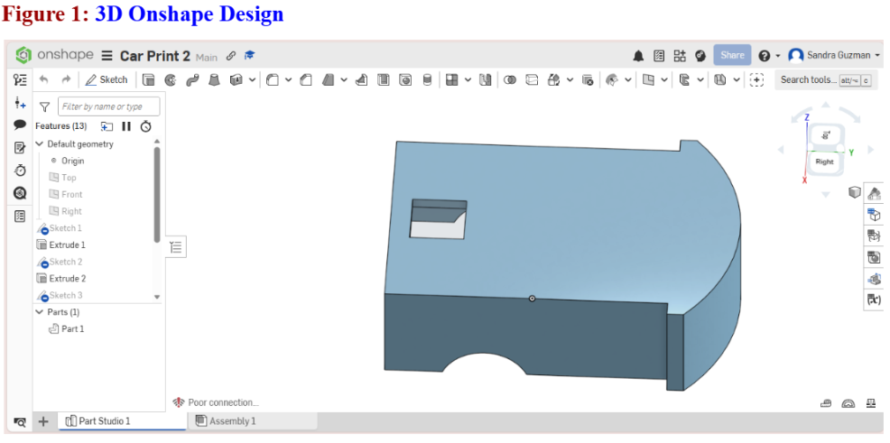
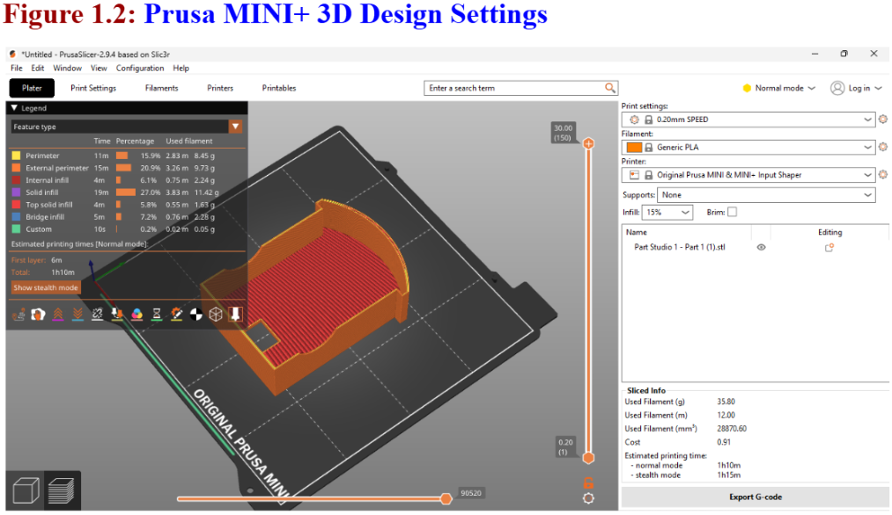
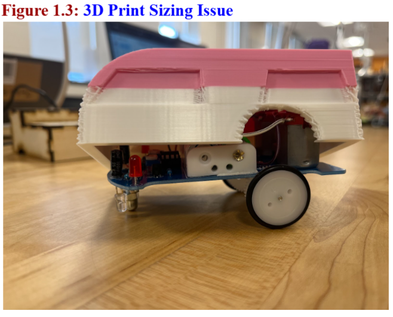
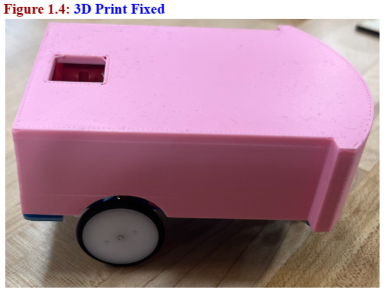

First, measurements of the robot were taken using a digital caliper to ensure the 3D model matched the real robot. The measurements included 70 mm for the width, 105 mm for the length, 4 mm from the plate to the top of the wheel, 28 mm for the wheel diameter, 60 mm from wheel to wheel, 30 mm from the axle to the back of the board, 20 mm from the tip to the base of the board, and 58 mm for another section of the robot. These measurements help make sure the digital design accurately represents the robot’s size and proportions. Next, the robot body was created in a 3D CAD program, Onshape. The Sketch option was selected and the top plane was chosen to start the design from a top view. The center rectangle tool was then used to draw the main body of the robot, and the recorded dimensions were entered so the shape matched the real robot. The extrude feature was used to give the sketch thickness and turn it into a 3D base, which represents the platform that holds the robot’s components. See Figure 1.

To create the rounded front section of the robot, the 3-point arc tool was used to draw a curved edge and dimensions were entered. This arc was then extruded to match the rest of the body. The completed model was exported and saved as an STL file, which is a common format used for 3D printing or sharing 3D models. Finally, the STL file was opened in PrusaSlicer. The model was then sliced, which means the software converted the 3D model into many thin layers that a 3D printer can follow during printing. After slicing, the file was exported as G-code, which is the set of instructions that tells the 3D printer how to move, where to place material, and how to build the object layer by layer. The G-code file was then saved to a USB drive and safely ejected, so it could be inserted into the 3D printer and used to print the robot part. See Figure 1.2.

After the first 3D print, my partner and I realized that the model was too small on the sides, which meant the dimensions did not properly match the robot’s actual size. To fix this issue, we went back into the CAD model and readjusted the dimensions by adding 5 mm to each side. This modification increased the width of the design so the parts would fit correctly. After making the adjustment, the model was ready to be exported and prepared again for printing. See Figure 1.3 and 1.4.

